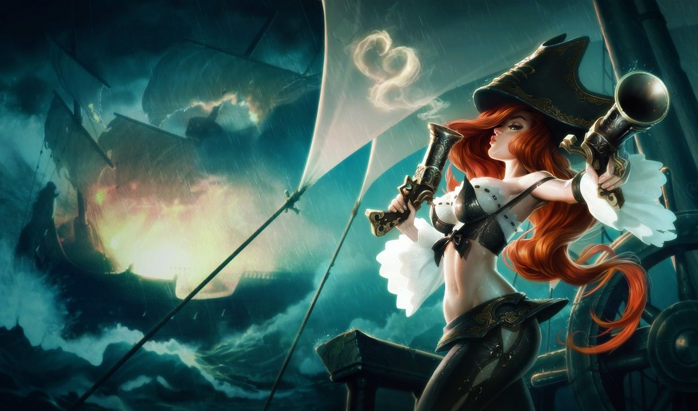

미스 포츈
미스 포츈
미스 포츈, 현상금 사냥꾼
Miss Fortune, the Bounty Hunter

1. 배경
2. 스킬
2.1. 패시브 - 사랑의 한 방(Love Tap)
2.2. Q - 한 발에 두 놈(Double Up)
두 번째 대상에게는 치명타를 입힐 수 있으며, 첫 번째 대상을 처치했을 경우 두 번째 대상에게는 항상 치명타가 적용됩니다.
2.3. W - 활보(Strut)
사용 시: 이동 속도 증가 효과를 최대로 얻고 4초 동안 공격 속도가 상승합니다.
2.4. E - 총알은 비를 타고(Make It Rain)
2.4. R - 쌍권총 난사(Bullet Time)
이 스킬은 매회 발사 시 각각 120%의 치명타 피해를 입힐 수 있습니다.
3. 장점
강한 라인전
미스 포츈은 빌드와 관계없이 한발에 두 놈(Q), 총알은 비를 타고(E), 대상에게 가하는 첫 평타가 강화되는 패시브 덕에 라인전에서의 딜교환에 능하고, 푸시력과 라인 복귀 및 이탈 능력도 매우 좋은 편에 속하기 때문에, 다른 라인의 개입 없이 라인전이 펼쳐지는 구도에서는 대부분의 상대에게 상당한 압박을 가하며 주도권을 가져올 수 있다. 레벨과 템이 어느 정도 확보되고부터는 맞딜 능력도 매우 강력해진다.뛰어난 공간 장악 능력 및 한타 기여도
쉬운 조작 난이도
패시브는 계산이 필요 없으며, 한발에 두 놈은 타겟팅&자동 추적, 활보 스킬은 공격 속도를 올려주는 심플한 버프이다, 총알은 비를 타고와 쌍권총 난사 역시 누군가를 타겟팅하거나 할 필요 없이 적당히 사거리가 긴 장판형 스킬이라 미스 포츈의 전반적 난이도는 매우 쉬운 축에 속한다. 또한 평타 모션이 좋은 데다가 사랑의 한 방 덕분에 다른 원딜보다도 미니언 골드 수급 능력이 높은 편에 속하고, 한 발에 두 놈으로 놓칠 것 같은 미니언을 캐치할 수도 있어 CS 수급이 타 원딜 챔피언보다 훨씬 쉽다. 때문에 튜토리얼에서 처음 접하게 되는 원딜러로 선정되어있기도 하다.빠른 이동 속도
4. 단점
떨어지는 지속 화력과 높은 궁극기 의존도
미스 포츈은 강력한 궁극기 화력과 패시브로 우수한 순간 폭딜 능력을 받은 대신, 기본 공격력이 매우 낮아 첫 콤보 이후 딜량이 꽤 부족하다. 이로 인해 큰 교전에서 탱커 등 앞 라인을 녹이는 게 쉽지 않은 편이며, 따라서 통상적인 치명타 원딜과 동성장을 하게되면 한타 등 교전에서 불편할 수 있다. 정석적인 치명타 원딜 빌드를 타면 공격력은 템으로 떼우고 공속은 W로 보충해서 순간적인 DPS가 부족하진 않은 편이지만, 길지 않은 사거리와 생존기의 문제로 인하여 딜을 해내기가 까다롭고, 방관 빌드는 말할 것도 없다. 이 부분을 보완할 수 있는 것은 평타보다 사거리가 길고 광범위한 딜링을 가하는 궁극기밖에 없기 때문에 미스 포츈은 궁극기 의존도가 원딜 중에서 최상급으로 높다.오브젝트 공략이 쉽지 않음
낮은 생존성과 채널링 스킬 특유의 포지셔닝 리스크

저작물은 CC BY-NC-SA 2.0 KR에 따라 이용할 수 있습니다. (단, 라이선스가 명시된 일부 문서 및 삽화 제외)